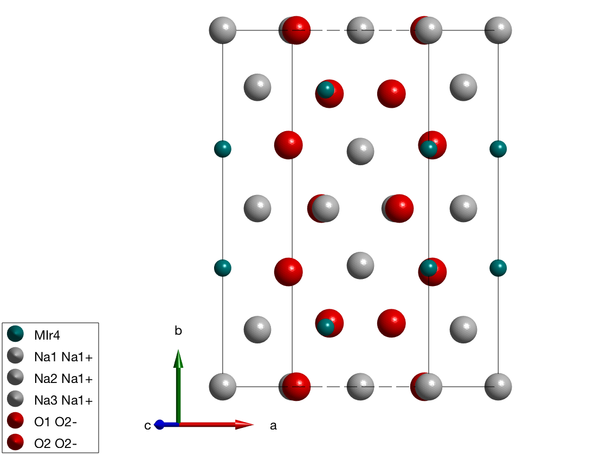
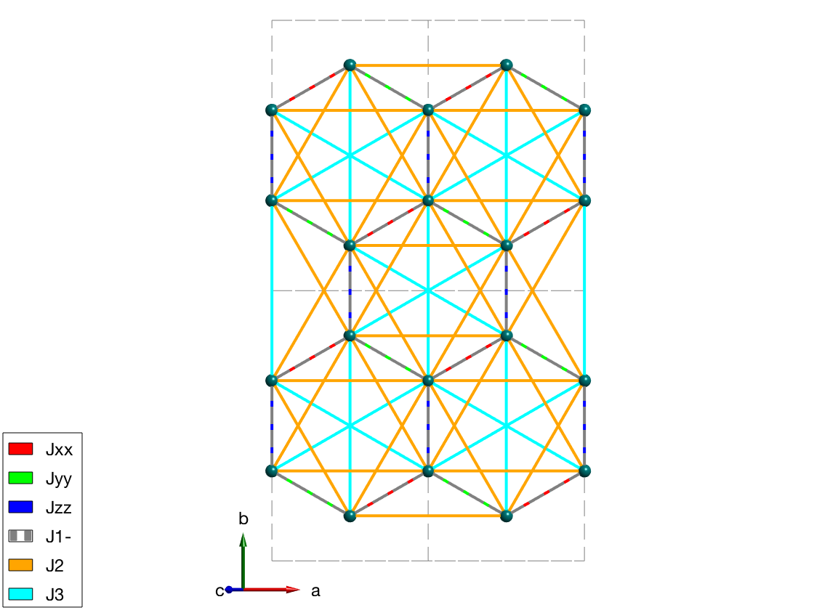
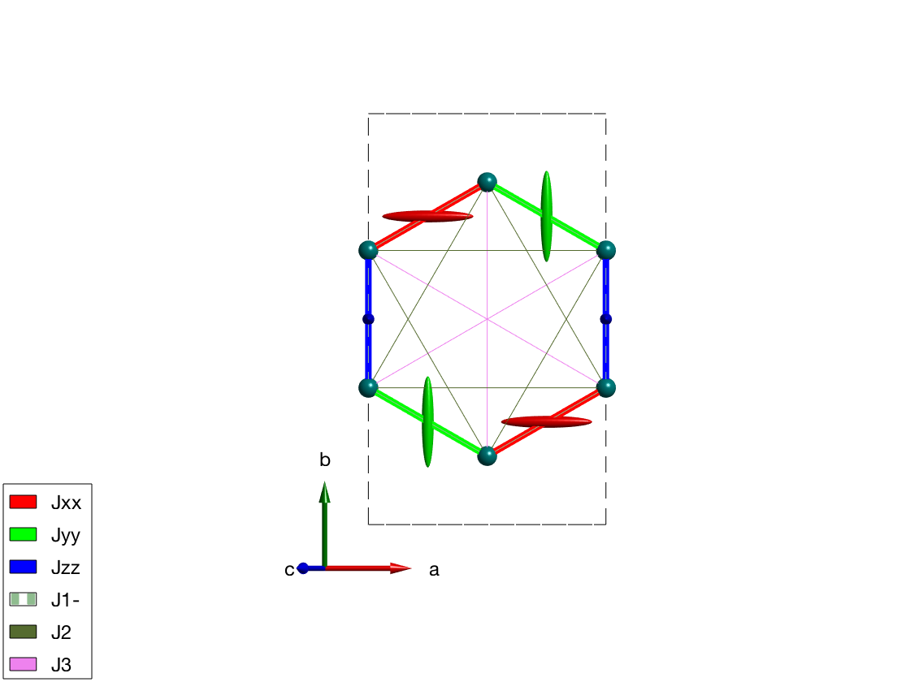

Symmetry of Na2IrO3
we analyse the symmtry of Na2IrO3 and compare the model Hamiltonian to S. K. Choi, et al. PRL, 108(12), 127204 (2012), [[http://link.aps.org/doi/10.1103/PhysRevLett.108.127204]].
Contents
Crystal structure
We define the crystal structure using the space group C2/m, and taking the crystallographic parameters at 300 K (parameters are only slightly different at 5 K) and we add not only the magnetic Ir4+ ions with effective spin quantum number of 1/2 but also the non-magnetic atoms for plotting the structure.
nairo = spinw; nairo.genlattice('lat_const',[5.427 9.395 5.614],'angled',[90 109.037 90],'spgr','C 2/m') nairo.addatom('label','MIr4','r',[1/2; 0.167; 0],'S',1/2,'color','DarkCyan'); nairo.addatom('r',[0 1/2 1/2;0 0 0.340; 0 1/2 1/2],'S',[0 0 0],'label',{'Na1 Na1+' 'Na2 Na1+' 'Na3 Na1+'},'color',{'lightGray' 'lightGray' 'lightGray'}); nairo.addatom('r',[0.748 0.711; 0.178 0; 0.789 0.204],'S',[0 0],'label',{'O1 O2-', 'O2 O2-'},'color',{'r' 'r'}); plot(nairo,'baseShift',[-2;0;0]) swplot.zoom(1.3) % We generate all bonds up to 8 Angstrom length. nairo.gencoupling('maxDistance',8);
Magnetic Hamiltonian
We define the three anisotropic exchange interactions and Heisenberg exchange J1, J2 and J3 and assign them according to the paper. We assign a constant 1 meV for all exchange matrix, that we will change later for every model. J1 is plotted with dashed line to see both J1 and the kitaev coupling on the plot ('-' at the end of the matrix label will be plotted with dashed line). The Jxx and Jyy Kitaev terms are assigned to symmetry equivalent bonds, but they don't transform according to the space group symmetry. Thus we use a second option 'subIdx' to subselect from the symmetry equivalent bonds. In this case SpinW won't apply the symmetry transformation on exchange matrices on these bonds, it can be also forced setting the 'sym' option false in the spinw.addcoupling() function. The reduction of the symmetry generates a warning.
% Kitaev term nairo.addmatrix('label','Jxx','value',1,'color','r'); nairo.addmatrix('label','Jyy','value',1,'color','g'); nairo.addmatrix('label','Jzz','value',1,'color','b'); % Heisenberg terms nairo.addmatrix('label','J1-','value',1,'color','gray'); nairo.addmatrix('label','J2','value',1,'color','orange'); nairo.addmatrix('label','J3','value',1,'color','cyan'); % add J1, J2 and J3 and JK couplings nairo.addcoupling('mat','J1-','bond',[1 2]); nairo.addcoupling('mat','J2','bond',[3 4]); nairo.addcoupling('mat','J3','bond',[7 8]); % Plot all couplings. plot(nairo,'range',[2 2 0.5],'atomMode','mag','cellMode','inside',... 'atomLegend',false,'cellcolor','gray','bondMode','line','bondLinewidth0',2) swplot.zoom(1.4) % add JJxx, Jyy and Jzz couplings nairo.addcoupling('mat','Jxx','bond',1,'subidx',[3 4]); nairo.addcoupling('mat','Jyy','bond',1,'subidx',[1 2]); nairo.addcoupling('mat','Jzz','bond',2); % Plot Kitaev couplings only. plot(nairo,'range',[2 2 0.5],'atomMode','mag','cellMode','inside',... 'atomLegend',false,'cellcolor','gray','bondMode','line','bondLinewidth0',2) swplot.zoom(1.4)
Warning: By subselecting equivalent bonds, the symmetry of the corresponding bond(s) are reduced to P1! Warning: By subselecting equivalent bonds, the symmetry of the corresponding bond(s) are reduced to P1!
Emphasizing Kitaev term on the plot
We change the exchange values to make the Kitaev coupling the largest and plot the bonds with thickness that dependes on the strength of the coupling.
nairo.addmatrix('label','Jxx','value',diag([1 0 0]),'color','r') nairo.addmatrix('label','Jyy','value',diag([0 1 0]),'color','g') nairo.addmatrix('label','Jzz','value',diag([0 0 1]),'color','b') nairo.addmatrix('label','J1-','value',0); nairo.addmatrix('label','J2','value', 0); nairo.addmatrix('label','J3','value', 0); plot(nairo,'range',[1 1 1/2],'atomMode','mag','bondRadius1',0.15,'bondMode','line',... 'bondLineWidth','lin','bondLinewidth0',4,'atomLegend',false)